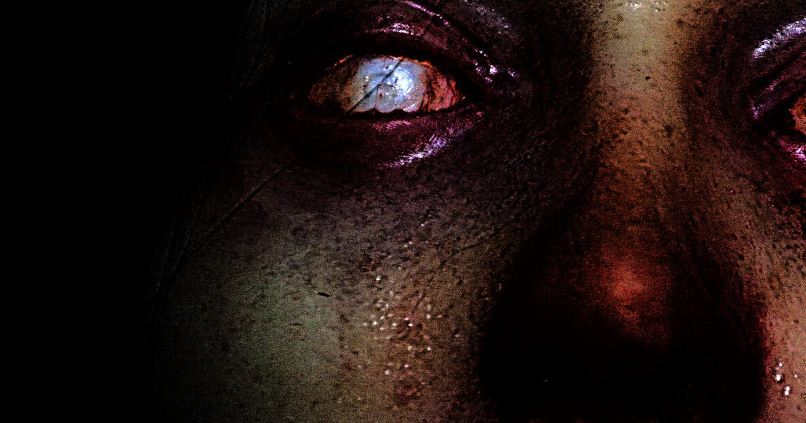

2026-10-16 · 新游深读
《Tenebris Somnia》今天 10 月 16 日发售，PC（Steam / GOG）+ PS5 / Xbox Series X|S / Switch / Switch 2 同步，标准价 24.99 美元、首发八折 19.99 美元。发行是 New Blood Interactive（《FAITH》《ULTRAKILL》那帮人），开发是阿根廷的 Saibot Studios 与导演 Andrés Borghi，《FAITH》作者 Airdorf 挂名执行制作。表面卖点是"像素生存恐怖 + 真人实拍过场"，但真正值得聊的其实是一件反常识的事：他们是先拍真人，再照着实拍场景把像素画出来的。这个顺序一颠倒，整个设计的性质就变了。

你是 Julia，一个还留着前男友公寓钥匙的年轻女人。连续几晚梦见他出事之后，你决定把钥匙还回去、把这章翻篇。到了才发现：门被暗红色结晶封死，上面刻着东西；电影海报被划烂，胶卷散了一地，电视砸了。Ivan 不见了，而他搞的那套邪教仪式显然没停。
玩法是标准老派生存恐怖：横向 2D 像素场景里翻房间、捡东西、把道具在物品栏里合成（这是它最像 MS-DOS 时代冒险游戏的一处）、解谜、用手枪和霰弹枪打怪、管理少得可怜的弹药与回血。整体体量 6 到 8 小时。
然后，在某些关键节点，画面突然从像素切进真人实拍：真演员、真化妆、实体特效、搭出来的实景。不是 CG，是摄影机拍下来的东西。
绝大多数"复古像素 + 实拍"的项目，逻辑是同一个：用像素盖住预算不够的部分，只在最贵的镜头上掏钱拍真人。像素是妥协，真人是补偿。
Tenebris Somnia 反过来。官方与媒体口径一致地提到一个细节：实拍片段先完成，像素房间是照着实拍布景画的——门的样式、墙的颜色、家具的摆位，都对着照片还原，所以你从像素切进真人时，认得出是同一个房间。
这一步的意义比它听起来大得多。它意味着像素不是"低配版"，而是一次有意的降采样。整个游戏的世界观建模发生在 4K 的现实里，然后被人为压成 8-bit 交给你。你在像素里看到的每一扇门，背后都有一个真实存在过的、被灯打过的、被特效做过脏的物理门。
这就是为什么它的切换不跳戏。同类项目常见的毛病是"像素和真人像两部片"，而它靠共享同一套空间参照把两种画风焊在了一起。
接着要问：那为什么要切？
恐怖游戏有个底层机制——留白越狠，脑补越脏。像素恰恰是最强的一种留白：一个 16×16 的怪物精灵，你看不清它的牙、它的黏液、它皮肤下的东西，于是你的脑子会自动替它补全最恶心的版本。这就是为什么很多老恐怖游戏"画质差反而更吓人"。
Tenebris Somnia 把这个机制当成了可操作的开关：先让你在像素里脑补，然后在你脑补完成的那一秒，把答案砸到你脸上。
Shacknews 的评测里有段描述非常准确——他打开一扇门，看见一个 8-bit 怪物张着嘴，画面切进实拍视角，那个东西令人作呕。注意这里吓人的不是实拍本身，是从抽象到具象的那段落差。落差才是 jump scare，实拍只是落差的终点。
所以它把 FMV 用在"关键剧情节点"而不是"每过一关放一段"，是对的。这个资源一旦用滥，落差就被磨平了——事实上已经有评测嫌实拍片段太少了，而"太少"在设计上恰恰是优点，甚至有人希望能出一个把所有实拍剪在一起的导演剪辑版独立短片。
近两年真人影像在游戏里回潮，但用法分岔得很清楚：
第三种用法很少见，也很聪明：它把"看片"包装成了进度奖励，于是你愿意为了下一段实拍去忍受它那些复古的毛病——而那些毛病是真存在的。
这个游戏的战斗手感，用"糟糕"形容不算刻薄，但用"偷懒"形容就是误读了。
Shacknews 的评价讲得很直白：它让人"重新理解了过去三十年游戏设计学到过什么教训"。这句话既不是夸也不是骂——它是在说这不是怀旧，这是原教旨。
而这恰恰是 New Blood 的一贯立场。这家发行商整个 catalog 都在做同一件事：把老的技术限制当成设计约束重新执行一遍，并且拒绝现代化。在 Tenebris Somnia 里，让 Julia 站定才能开枪不是因为做不出移动射击，是因为他们认为"你在这个世界里不该有掌控感"。
你可以不同意这个立场，但不能说它没想清楚。
概念与执行：9.0 / 10（先拍真人再画像素，用画风落差做成惊吓开关，这是近年最聪明的一次形式实验）
氛围与音画：8.7 / 10（像素层的配色分区——现实场景正常、异界 Desiderium 用病态色与倒置空间——做得非常有效）
叙事：8.0 / 10（Julia / Ivan 的关系不断被新信息重新语境化，附身与灵魂献祭的神话收得住）
战斗与操作：5.5 / 10（站定开枪、卡几何体、终盘资源失衡，复古惩罚过了头）
解谜引导：6.0 / 10（前半段良好，后半段指向性缺失明显拖节奏）
综合首发评分：7.8 / 10
可查的硬信息：Steam 页面标注 10 月 16 日发售，开发商栏并列 Andrés Borghi 与 Saibot Studios，发行 New Blood Interactive；标签为 Adventure / Indie；Steam Deck 已验证，官方推荐用手柄；标准价 24.99 美元、首发 20% 折扣到 19.99 美元，拥有《FAITH: The Unholy Trinity》的玩家还有额外折扣；Steam 上有免费 demo。PC 最低配置门槛很低（Win10 64 位 / 8GB 内存 / 4GB 显存），但安装体积约 13GB——因为里面塞了大量实拍视频。Borghi 本人的视效履历里有《当邪恶潜伏时》(When Evil Lurks)，Airdorf（《FAITH》作者）任执行制作。
这个游戏最好和最差的部分，其实来自同一个决定。
他们决定把"复古"当成一套完整的、不打折的设计语言来执行——于是你得到了近年最锋利的一次形式实验（画风落差当开关用），同时也得到了一套真的很难用、且拒绝为你让步的操作。这两件事不是并列的两个优缺点，是同一枚硬币的两面：如果你把操作现代化了，那种"我在这屋里没有掌控感"的压迫就没了；而那种压迫正是像素层恐怖成立的前提。
所以我们不认为"优化一下手感"就能让它变好。它的毛刺是结构性的，只能被接受，不能被修掉。真正该被问的问题是：六小时的体量，值不值得你为一种立场忍受六小时？
| 作品 | 影像扮演的角色 | 玩家与影像的关系 |
|---|---|---|
| Her Story（2015） | 数据库 | 主动检索：在片段里搜词、拼时间线 |
| Immortality（2022） | 可操作的胶片 | 主动 scrub：逐帧点人点物跳转 |
| Alan Wake 2（2023） | 叙事语法 / 现实裂隙 | 被动观看：作为演出层插入 |
| Tenebris Somnia（2026） | 进度奖惩 + 分辨率升级 | 被奖励：熬过探索才给你看 |
横向一摆就能看出它的位置有多空。前面三种都有人做过很多次，唯独"把实拍当成稀缺奖励来发放"这条路上几乎没别人。这也是为什么哪怕它手感这么差，我们仍然认为它值得被记住。
《Tenebris Somnia》不是今年最好的恐怖游戏，但它可能是今年最会用一个形式点子的恐怖游戏。
"先拍真人，再把它降采样成像素，然后在你脑补完成的瞬间把原图砸回来"——这套机制干净、可执行、而且真的有效。它证明了一件事：复古不是画质选项，复古可以是叙事工具。
代价是它同时把复古的坏毛病原封不动地一起搬了过来，而且拒绝让步。所以我们的建议很分裂但很明确：对概念好奇的人，现在就买，19.99 美元买这个点子不贵；对体感挑剔的人，等，别硬吃。至于它值不值得六小时——先去把那个免费 demo 打完，答案你自己会知道。